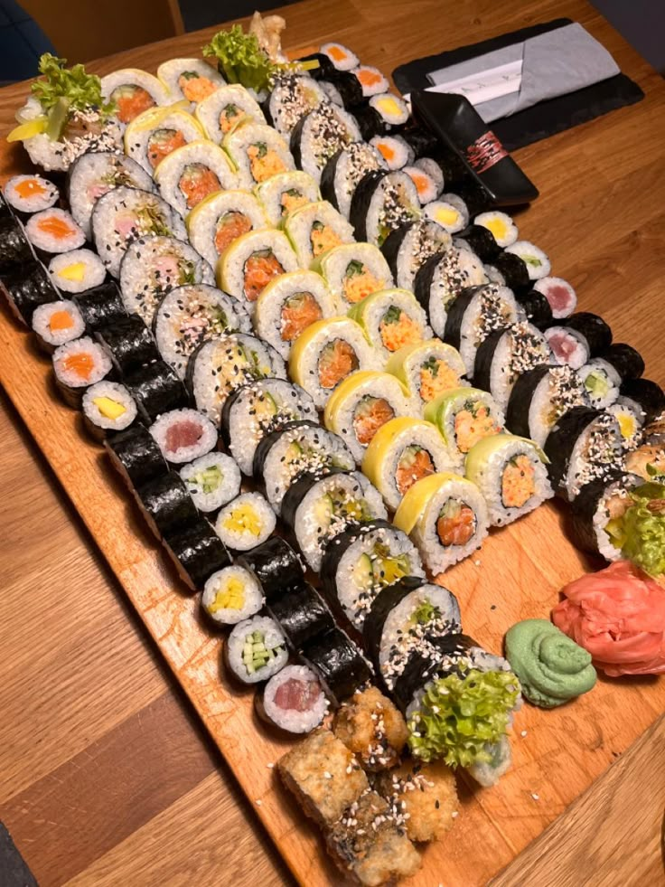
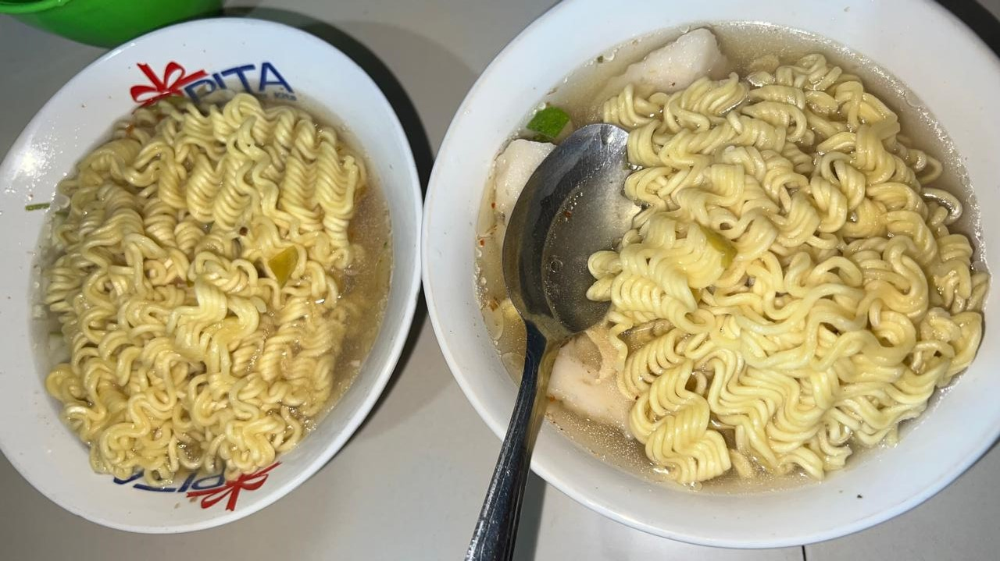
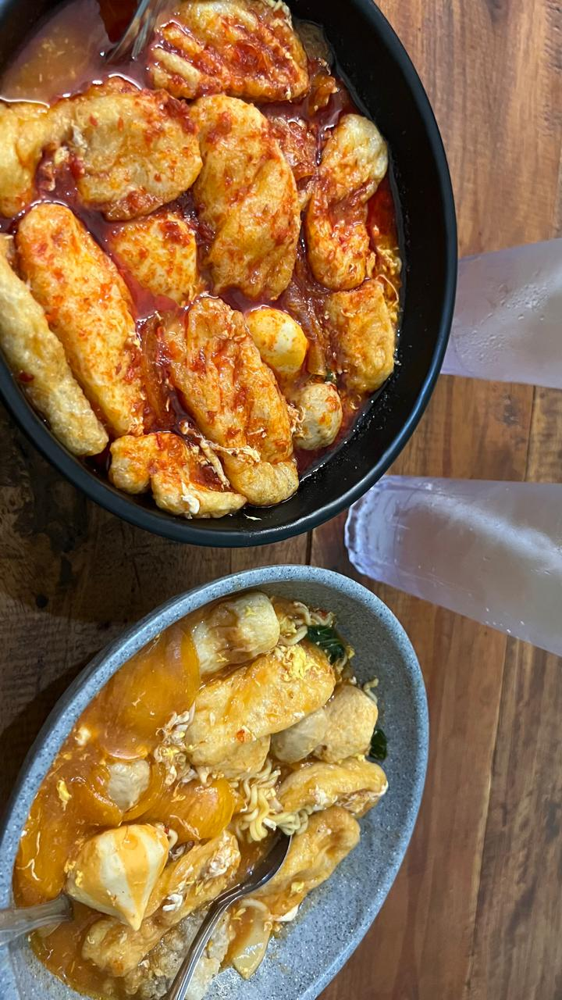
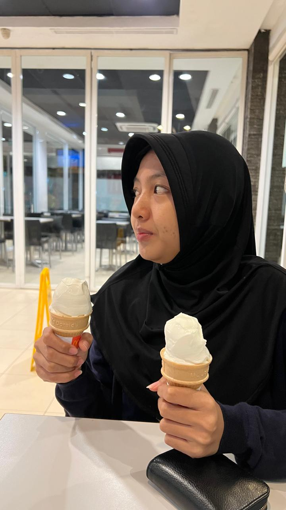

🍽️ Favorite Food 🍽️

Sushi:
pagi siang malem sushi sushi sushi 🍣

Model Selamet:
model mie selamet favorite uty 🍝

Seblak:
seblak level 5 atau lebih uty suka stress girl

Ice Cream:
ice cream apapun kesukaan uty 🍦
Back to Home